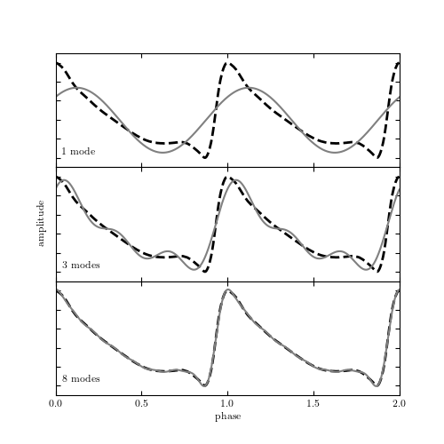

Fourier Reconstruction of RR-Lyrae Templates¶
This figure demonstrates Fourier decomposition using RR-Lyrae templates
Downloading http://www.astro.washington.edu/users/bsesar/S82_RRLyr/RRLyr_ugriz_templates.tar.gz
[= ] 4.2kb / 168.7kb
[== ] 8.4kb / 168.7kb
[=== ] 12.6kb / 168.7kb
[==== ] 16.9kb / 168.7kb
[===== ] 21.1kb / 168.7kb
[====== ] 25.3kb / 168.7kb
[======= ] 29.5kb / 168.7kb
[======== ] 33.7kb / 168.7kb
[========= ] 37.9kb / 168.7kb
[========== ] 42.2kb / 168.7kb
[=========== ] 46.4kb / 168.7kb
[============ ] 50.6kb / 168.7kb
[============= ] 54.8kb / 168.7kb
[============== ] 59.0kb / 168.7kb
[=============== ] 63.2kb / 168.7kb
[================ ] 67.5kb / 168.7kb
[================= ] 71.7kb / 168.7kb
[================== ] 75.9kb / 168.7kb
[=================== ] 80.1kb / 168.7kb
[==================== ] 84.3kb / 168.7kb
[===================== ] 88.5kb / 168.7kb
[====================== ] 92.7kb / 168.7kb
[======================= ] 97.0kb / 168.7kb
[======================== ] 101.2kb / 168.7kb
[========================= ] 105.4kb / 168.7kb
[========================== ] 109.6kb / 168.7kb
[=========================== ] 113.8kb / 168.7kb
[============================ ] 118.0kb / 168.7kb
[============================= ] 122.3kb / 168.7kb
[============================== ] 126.5kb / 168.7kb
[=============================== ] 130.7kb / 168.7kb
[================================ ] 134.9kb / 168.7kb
[================================= ] 139.1kb / 168.7kb
[================================== ] 143.3kb / 168.7kb
[=================================== ] 147.6kb / 168.7kb
[==================================== ] 151.8kb / 168.7kb
[===================================== ] 156.0kb / 168.7kb
[====================================== ] 160.2kb / 168.7kb
[=======================================] 164.4kb / 168.7kb
[========================================] 168.6kb / 168.7kb
[=========================================] 168.7kb / 168.7kb
# Author: Jake VanderPlas <vanderplas@astro.washington.edu>
# License: BSD
# The figure produced by this code is published in the textbook
# "Statistics, Data Mining, and Machine Learning in Astronomy" (2013)
# For more information, see http://astroML.github.com
import numpy as np
from matplotlib import pyplot as plt
from astroML.datasets import fetch_rrlyrae_templates
#------------------------------------------------------------
# Load the RR Lyrae template
templates = fetch_rrlyrae_templates()
x, y = templates['115r'].T
#------------------------------------------------------------
# Plot the results
fig = plt.figure()
fig.subplots_adjust(hspace=0)
kvals = [1, 3, 8]
subplots = [311, 312, 313]
for (k, subplot) in zip(kvals, subplots):
ax = fig.add_subplot(subplot)
# Use FFT to fit a truncated Fourier series
y_fft = np.fft.fft(y)
y_fft[k + 1:-k] = 0
y_fit = np.fft.ifft(y_fft).real
# plot the true value and the k-term reconstruction
ax.plot(np.concatenate([x, 1 + x]),
np.concatenate([y, y]), '--k', lw=2)
ax.plot(np.concatenate([x, 1 + x]),
np.concatenate([y_fit, y_fit]), color='gray')
label = "%i mode" % k
if k > 1:
label += 's'
ax.text(0.02, 0.1, label, ha='left', va='bottom',
fontsize=14, transform=ax.transAxes)
if subplot == subplots[-1]:
ax.set_xlabel('phase')
else:
ax.xaxis.set_major_formatter(plt.NullFormatter())
if subplot == subplots[1]:
ax.set_ylabel('amplitude')
ax.yaxis.set_major_formatter(plt.NullFormatter())
ax.set_xlim(0, 2)
ax.set_ylim(1.1, -0.1)
plt.show()